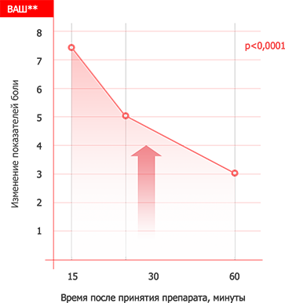
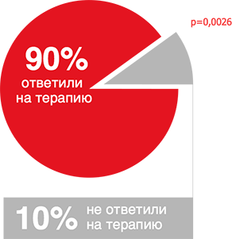

избавление от спазма и болей в монотерапии
Эффективная терапия дисменореи в 90%* случаев.
Начало действия через 30 минут.


∗Confidence Interval [ 93.5; 100] ∗ ∗Confidence Interval [ 93.5; 100]
FAS LREG patients (N=1099) / Dysmenorrhoea (N=580)